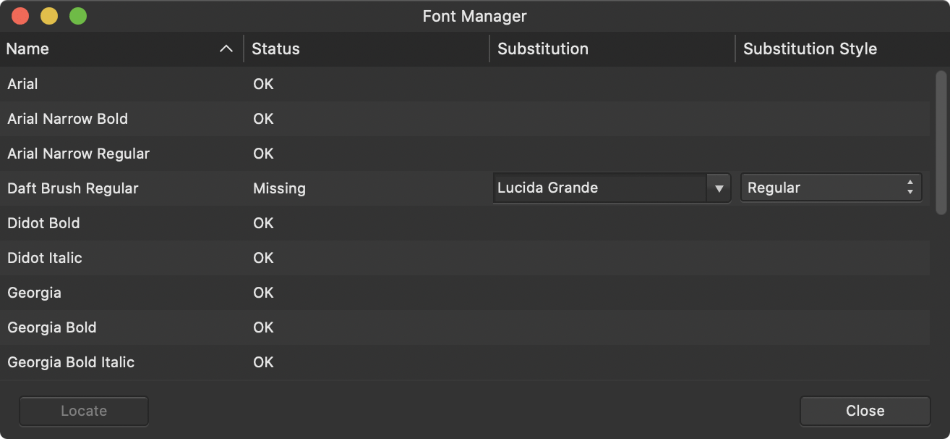

Manage all your used fonts from one location using Font Manager. You can check if any unavailable fonts have been substituted for another font, swap for another font and also locate the text instance which uses the font.

On opening a document that uses fonts that are not installed on your computer, you'll get notified of this issue via a pop-up message. It's common practice to resolve this situation so the document will look as the original creator intended.
The Font Manager lists fonts used in text objects throughout your publication, along with their current status and substitution state (e.g., missing). You can either source the missing font yourself or use the Manager to use a substitute font instead.
The Status column can display several states:
The column called Substitution shows which local fonts are being used as substitutes for missing fonts. Fonts will already have been chosen for you as replacement but you can pick your preferred font instead.